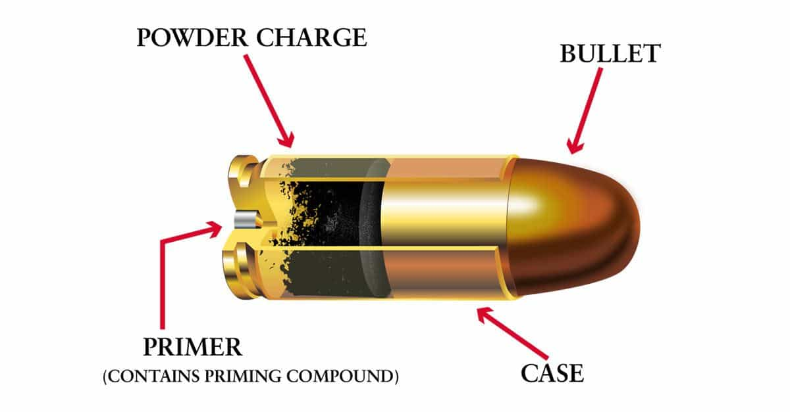

Luke Stranahan is an engineer by trade and an armed patriot by inclination. He writes for Return of Kings as a leisure pursuit and an attempt to do his part to help reverse the slide into moral decrepitude of modern society. Follow him on Twitter.


I’ve written a good many firearms articles for Return Of Kings, and I’ve gotten a couple comments regarding ammunition selection. As a gun is useless without proper skills, so it is without proper ammunition, and that implies having some knowledge of the ammunition itself. As there are many subjects under the umbrella of “ammo,” we’ll start this series of articles today with talking about rifle and pistol ammunition.
Modern centerfire rifle ammo (and centerfire pistol ammo, as well) are composed of four separate components which we will discuss in turn. The term “cartridge” or “round” refers to the assembly of the primer, the case, the powder charge, and the projectile (the bullet itself). It is colloquial, though not correct, to refer to the whole cartridge as a bullet, i.e. “I only have ten bullets left for my AR!” which is an erroneous statement, as an AR-15 can do nothing with a bullet by itself. Don’t bother correcting people on it, lest you be considered a “well, technically…..” dweeb, but simply know what’s up.

Although each component is critical to accurate, reliable shooting (not to mention the gun itself), the bullet has many attributes that affect its performance of which you should be informed. Weight, shape, material, and composition or construction are the important ones to know.
Bullet weight is measured in grains, just like powder weight is. The first thing to understand is that a given rifle is chambered for a given caliber, and that means the width of the bullet is fixed for that gun. A rifle chambered in 7mm Remington needs to shoot bullets that are 7mm in diameter, otherwise it will blow up or not shoot accurately, depending on whether the bullet is too wide or too narrow.
A bullet that is a heavier grain weight than another, in the same caliber, will be longer in a proportional amount. Likewise, due to caliber restrictions, one can see that a range of weights is available for each caliber.
The upshot of bullet weight is twofold. Firstly, a heavier bullet will fly slower with the same amount of powder behind it as a lighter bullet, but it will be deflected and slowed down less by wind. Secondly, a longer bullet takes up more room, so you can run into chambering problems if the bullet sits out too far from the mouth of the case, or space problems with the amount of powder if it is set too far back into the case.
Bullet shape is primarily concerned with how long the bullet is (see the weight discussion above) and the shape of the tail of the bullet. Most of the front ends of bullets of a given caliber are exactly the same shape. You’re looking for accuracy here in your given weapon.
Material is usually lead, with some pure copper bullets out there. What you will usually run into is copper jacketed lead bullets. Communist surplus ammo is often cheaper copper-washed steel jacketed bullets, and these trade cost of manufacturer for increased wear on the barrel. Western manufactured ammo is better for your rifle, but costs more because of better components; your call.
Lastly is tip construction. A solid lead round is simply that. Enclose it in a complete copper jacket, and you have “Full Metal Jacket” or “ball” ammo. Leave a bit of lead showing at the end, and you have a “soft point.” Put a hole in the end, and you have “hollow point.” Put a plastic tip on it to aid flight stabilization and expansion upon impact, and you have “ballistic tip” bullets.
You have FMJ on the left three, then soft points, then hollow points, and lastly the red and green are polymer tips, while the metal one one the far right is a steel core armor piercer.
“Bonded” bullets have the copper jacket better attached to the lead core so that the round expands well (doing damage) but also retains mass for better penetration to vital areas. “Monolithic” bullets are one material only, usually copper. “Armor piercing” rounds have a steel core inside them designed to punch through armor and metal, instead of going splat and deforming like a lead only bullet does when hitting plate.
Lastly, “incendiary” rounds have some phosphorous inside them to burn on impact, and “tracers” have a coating of it on the round just to make a light so you can “trace” your bullet’s path and bring the stream of fire onto target (think a machine gun or anti-aircraft.)
The case, commonly called “the brass,” is a usually brass, metal can with a hole on the back for the primer and a hole on the front for the bullet. One seats a primer, fills the case with a predetermined amount of powder, then seats, and often crimps, the bullet into place so it does not move until fired.
The case is the only reusable component in ammunition as the powder is burned, the primer is spent, and the bullet, in addition to being gone, is usually deformed due to hitting the target wherever it is stopped. Many folks will melt down and recast salvaged bullets from target backstops, but the primary collectable is to save your brass. Always save it in case you want to reload, or you can sell it. Mind “brass whores” at ranges; don’t let them take your brass, and don’t tolerate them picking around for other brass while you are shooting; they can do their shameful whoring later when the range is empty. That being said, there’s nothing wrong with YOU picking up other good brass, just be discreet.
Save your brass, even if you don’t reload, as it can be sold to those that do.
Steel cases, on the other hand, like found in Communist surplus ammo, are not reloadable, and can be discarded. Rimfire cases, like in .22s, are very hard and cost prohibitive to reload, so you probably shouldn’t bother with them either.
Finally, cases are sometimes externally the same, but different on the inside. A civilian .223 case will look the same as a military 5.56×45 case, and will often shoot just as well as the other in a rifle, but the military brass is thicker, with less volume on the inside, which results in higher pressure for the same powder load. This is important to reloaders; the average shooter simply needs to make sure he gets the right ammo for his gun (read the headstamp on the back of the case, it needs to say the same thing as the gun does.)
Modern smokeless powder comes from a variety of manufacturers and has a variety of things it can do. Powder used in pistol bullets burns faster than powder meant for bullets in rifle barrels since the barrels are shorter. This is also why short barreled pistols make a fireball and a louder report than longer barrels; all that flash and fury was meant to be done in the last bit of the barrel.
Without getting too much into reloading science, ammo manufacturers and reloaders pick a powder that will make the bullet fly the fastest and most stably in an anticipated barrel length and will physically fill the case to an acceptable degree (over half.) It’s ok to have some airspace in a cartridge, but you want to minimize that as long as you can fully seat your bullet. You absolutely want to have powder loads that cannot be double filled inside the case’s volume so you don’t blow up the gun and you.
Different powders.
From a factory ammo purchaser’s viewpoint, powder loads in a given brand and a given line are usually standard. I have run into budget ammo by major manufacturers that differs from one brand to another on how hot it is loaded; some brands will not cycle a semi-auto that requires a lot of recoil to run, although that is usually more pistol ammo.
Black powder, which is rare to see in a cartridge, is corrosive once fired. Black powder substitutes, and modern smokeless powder is not. If you shoot corrosive powder, flush your rifle out with ammonia solution, like Windex, as soon as possible, then clean normally.
Lastly, we have primers. Primers are one use only, typically come in magnum and regular varieties, pistol and rifle sizes, and some are harder than others. Military rifles typically like harder primers as a lot of them have floating firing pins that will ding the primer with their inertia upon chambering, which can cause a slam fire (the rifle goes off upon chambering.)
Boxer pistol primers, seen in cartridges, and loose. The trefoil looking thing is the anvil, and it is what the primer compound is smooshed against by the firing pin, and the blast goes out around it into the powder
For reloading purposes, primers are either of the Boxer variety, or the Berdan variety, and that has to do with the firing channels in the case, and whether or not you can push the primer out with a reloading tool. Most US ammo is Boxer, and reloadable, and you see Berdan primers, which are harder to reload, more in European ammo.
Surplus Soviet ammo, like 7.62x54R, have primers that let loose corrosive salts. See the above note about Windex.
Ammo selection is an important tool to use in maximizing a gun’s potential. Many people will only own one or two guns, and it is a good thing to be able to do as much as you can with what you’ve got. We’ll reference this article in future discussions about reloading. Be safe.
Overloaded ammo can do this.
Read More: What To Do In An Ammo Panic